Every file in this directory is generated from one geometric source. Edit the geometry, regenerate, commit — never hand-edit the output.
yarn generate-iconsA letter K whose strokes are graph edges: the terminals close into nodes, and the joint where the strokes converge is replaced by a core. The brand initial, the graph, and the idea of a database core are the same shape — nothing is bolted on.
Stroke weight that reads well at 512px collapses at 16px, so each size band gets its own cut. The generator picks the right one automatically.
| Band | Edge | Node r | Core | Why |
|---|---|---|---|---|
| 48px and up | 2.6 | 3.2 | ring r 4.3 / stroke 2.4 + nucleus r 1.5 | Full detail. |
| 32px | 3.0 | 3.4 | ring r 4.2 / stroke 2.8 + nucleus r 1.7 | Heavier strokes; core detail still resolves. |
| 16px | 3.2 | 3.5 | solid disc r 4.2 | The ring would land on ~1px and turn to mush. Solid core also frees up spine length, so the K reads better. |
Drawn on a 32 × 32 grid. All values below are in grid units — scale them by
size / 32 for any target size.
| Property | Value | Notes |
|---|---|---|
| Canvas | 32 × 32 | Nominal grid for every square asset. |
| Ink box | 21.7 × 27.2 | ~85% of canvas height; the remainder is breathing room. |
| Spine | x = 9.5 | Vertical axis of the K, broken where the core sits. |
| Arms | → x = 22.5 | Terminals at y 6.4 and 25.6, ~36° off the spine. |
| Core | (9.5, 16) | Sits on the spine at the optical centre, not the geometric one. |
| Lockup gap | 7.6 | Mark ink edge to wordmark ink edge. |
| Lockup ratio | 4.589 : 1 | 124.826 × 27.2 — e.g. 147 × 32, 1175 × 256. |
The mark is optically centred, not mathematically. The core hangs off the left of the spine, which pulls the ink box left of the canvas centre — the generator shifts it back by 1.15 units.
The core is always ember. It is the same accent the site uses, defined in
src/styles/custom.css — the icon set introduces no new colour.
Primary favicon. Switches structure colour with the OS scheme.
SVG · 32 gridFallback for clients that ignore SVG favicons.
ICO · packs 16 / 32 / 48The individual rasters packed inside the .ico.
PNG · 16 / 32 / 48Transparent ground, ink structure. For light contexts.
PNG · 64 → 512
Chalk structure for dark contexts — the standard set disappears there.
PNG · 192, 512Opaque ink ground — iOS composites transparency onto black.
PNG · 180 × 180Android maskable, shown here under the circle crop. Content stays inside the centre 80%.
PNG · 512 × 512Vector mark for light grounds.
SVGVector mark for dark grounds.
SVGSingle colour via currentColor — inherits the surrounding text colour when inlined.
Mark + wordmark. Mirrored into src/assets/logo/ for the site header.
Lockup for dark grounds.
SVG · 147 × 32Raster lockup for contexts that can't take SVG.
PNG · 1175 × 256Open Graph / Twitter card. Referenced by the og:image and twitter:image tags in astro.config.mjs.
These are live in astro.config.mjs — listed so you know what's there, not as
something to add again.
starlight({
favicon: "/icons/favicon.svg",
logo: {
light: "/src/assets/logo/koredb-logo.svg",
dark: "/src/assets/logo/koredb-logo-inverse.svg",
replacesTitle: true,
},
head: [
{ tag: "link", attrs: { rel: "icon", href: base + "/icons/favicon.ico",
sizes: "16x16 32x32 48x48" } },
{ tag: "link", attrs: { rel: "apple-touch-icon", sizes: "180x180",
href: base + "/icons/apple-touch-icon.png" } },
],
})
Write the path from the site root. The site is served under a base path, and
public/fix-base.js prefixes src and href attributes at
runtime — so do not hard-code the base yourself.
<img src="/icons/koredb-mark.svg" width="32" alt="KoreDB" /> 
Paste the contents of koredb-mark-mono.svg straight into markup and it takes the
colour of whatever text surrounds it — useful in buttons, nav items, and prose.
.badge svg { width: 1.25em; height: 1.25em; color: var(--sl-color-text-accent); }
Change the geometry in scripts/generate-icons.ts and run the generator. It rewrites
every file listed above, plus the two lockups in src/assets/logo/ and the social card.
yarn generate-icons
Keep free space around the lockup equal to the height of the core — a quarter of the mark's height. Nothing crosses it: no type, no rules, no image edges.
The mark holds down to 16px using the small cut. The lockup stops working below 96px wide (about 21px tall) — below that, drop the wordmark and use the mark alone.
-inverse files instead."KoreDB" is set in Archivo SemiBold and
converted to outlines in scripts/outlines.json, so no font is fetched at build or
render time. Archivo is licensed under the
SIL Open Font License 1.1, which permits this use.